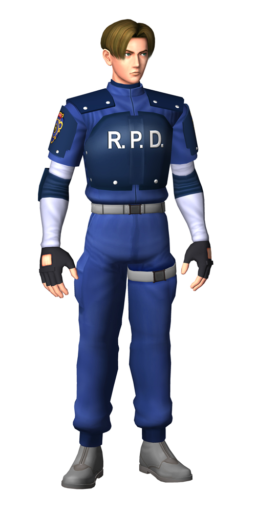
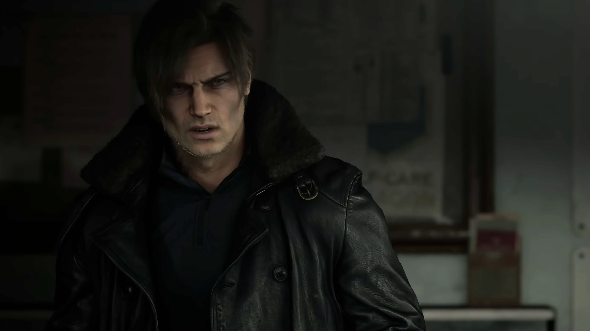

Leon S. Kennedy is one of the most recognizable characters from the survival-horror video game franchise Resident Evil, created by Capcom. He first appeared in Resident Evil 2 and has since become one of the main protagonists of the series.

Leon is typically portrayed as a determined and skilled fighter who specializes in handling biological threats like zombies and mutated creatures created by dangerous viruses.
Leon begins as a rookie police officer assigned to the Raccoon City police department. On his first day of work, the city is already overrun by zombies due to the T-Virus, a biological weapon created by the Umbrella Corporation. During this outbreak he works with Claire Redfield to survive and escape the city.
After surviving the outbreak, Leon is recruited by the U.S. government and trained as a special agent focused on bioterrorism. His experience in Raccoon City made him valuable for dealing with future biological threats. One of his most famous missions happens in Resident Evil 4, where he is sent to rescue the U.S. president's daughter from a mysterious cult in rural Spain.

Leon is known for:
Leon appears in many Resident Evil games and media, including:
Leon is one of the main heroes of the Resident Evil series, alongside characters like Chris Redfield and Jill Valentine. Fans like him because he evolves from a rookie cop into a highly trained government agent, making him one of the most developed characters in the franchise.
You can read more about Leon S. Kennedy here:
Leon S. Kennedy Character Page